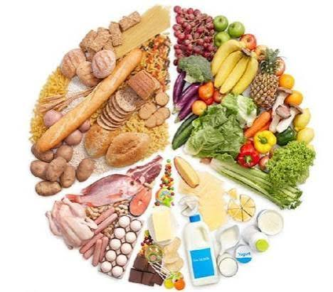
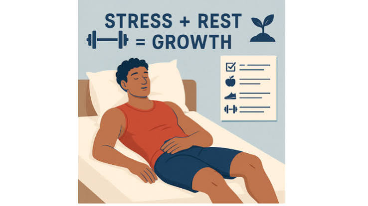

力量訓練
利用自體重量、啞鈴或彈力帶提供阻力。可以從椅子坐站、伏地挺身或划船開始，先熟悉動作，再逐步增加阻力或次數。
從了解身體數值、認識食物營養，到安排每週訓練，FITLIFE 陪你掌握健身的基本知識。
利用自體重量、啞鈴或彈力帶提供阻力。可以從椅子坐站、伏地挺身或划船開始，先熟悉動作，再逐步增加阻力或次數。
快走、騎車和游泳都是常見的有氧活動。中等強度下，呼吸會比平常快，但通常還能交談。可以先從容易持續的活動開始。

把全穀雜糧、蔬果與豆魚蛋肉搭配起來，並適量攝取油脂。碳水化合物提供活動能量，蛋白質是身體修復組織的原料。

在訓練日之間安排休息，並維持規律的睡眠。休息日可以散步或做輕鬆的活動，讓下一次訓練更容易維持原本的節奏。